Sovix CLI
On this page
Recommendation: Quickest clear distribution wedge.
On a small screen, swipe horizontally to read every column.
| Snapshot | Assessment |
|---|---|
| Supplied location ID | sovix-cli |
| Product family | Engineering evidence |
| Implementation stage | Focused tested CLI |
| Review date | 2026-09-26 |
| Local state | clean |
Vision and the problem it addresses
Give an honest lower bound for agent-signed repository activity with deterministic, inspectable metrics and no model dependency.
Who needs it: Engineering leads doing an initial AI-adoption audit; developers wanting a local report; consultants comparing fixed time windows.
The moment it becomes useful: A team wants evidence before installing invasive capture agents or giving a service tokens. A local git repository is already available.
How it works

This diagram summarizes the inspected design. It is not evidence of a successful end-to-end deployment. For a hands-on journey, use the onboarding guide.
How well it addresses the problem
- scanLocal validates a git repository and reads its log without a checkout mutation.
- 153 tests passed in this review, covering arithmetic, privacy, signatures, CLI export and reproducibility.
- Measured/proxy/inferred tiers and caveats are first-class output. Aggregate-only people data is a deliberate product boundary.
These are implementation strengths. Repeated use, customer demand and measured business outcomes remain separate questions.
What is missing or unproven
- Unsigned AI-assisted work is invisible. A low number can mean low capture coverage, not low adoption.
- Commits, lines and timing are not business productivity or quality. Comparisons need the same window, repository rules and sample exclusions.
- README explicitly says pre-1.0 and not on npm; a copy-paste npx command is not a verified distribution path here.
- It overlaps strongly with Receipts; two separate metric definitions would drift.
Smallest useful next step
Use the checked-out CLI for a clean example report, verify deterministic output twice and document installation honestly. Keep it as a small front door to the broader evidence product.
Acceptance exercise: Run npm test. Then node bin/sovix.js scan
This is a proposed validation exercise unless explicitly recorded as executed in VALIDATION.
Position in the portfolio
Related work: Receipts, Prompture, Qmmit.
Read the overlap and integration decisions before merging features. Shared vocabulary does not guarantee shared IDs, permissions, storage or lifecycle semantics.
On a small screen, swipe horizontally to read every column.
| Reviewer judgment, 1–5 | Score |
|---|---|
| Effort to a credible narrow pilot | 1 |
| Potential breadth and recurrence of the need | 3 |
| Integration, operational and consequence exposure | 1 |
These are ordinal planning judgments, not completion percentages or a commercial valuation. Empty/archive projects should be parked rather than treated as active bets.
Evidence and next reading
Source references and snapshot limits · Developer / Claude onboarding · Portfolio synthesis